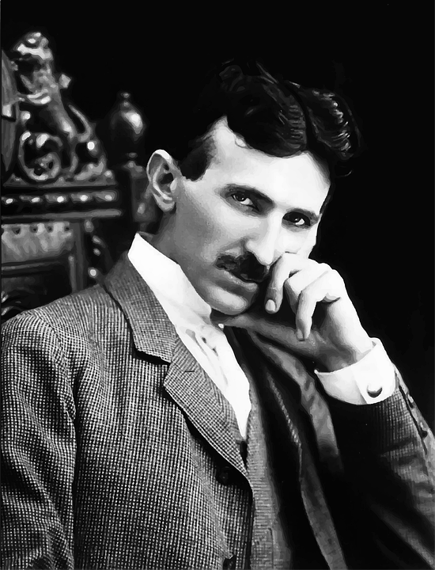

Nikola Tesla tribute page

Nikola Tesla posing his famous thinking position.
Time-line of interesting fact about Nikola Tesla:
- 1856 - Born in Croatia.
- 1877 - Droped out from "Imperial-Royal Technical College in Graz".
- 1880 - Worked in telephony and power industry.
- 1884 - Moved to the US.
- 1888 - Patented his induction motor invention.
- 1893 - Harnessed Niagara falls to generate electricity.
- 1893 - Wins the "War of the currents".
- 1898 - Demonstrated radio remote control with rc-boat sailing in a lake.
- 1901 - Started to working on his "Wardenclyffe Tower" a worldwide WPT.
- 1943 - Died in the "New Yorker" hotel at room 3327.
"The present is theirs; the future, for which I really worked, is mine." N. Tesla
Read more about the great inventor in his wiki page, you use his tech every time you switch the light on!